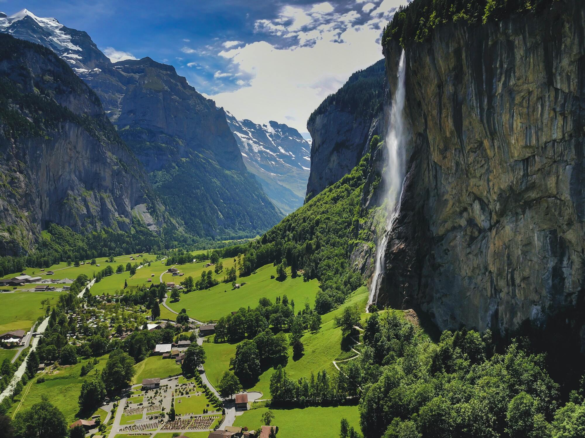
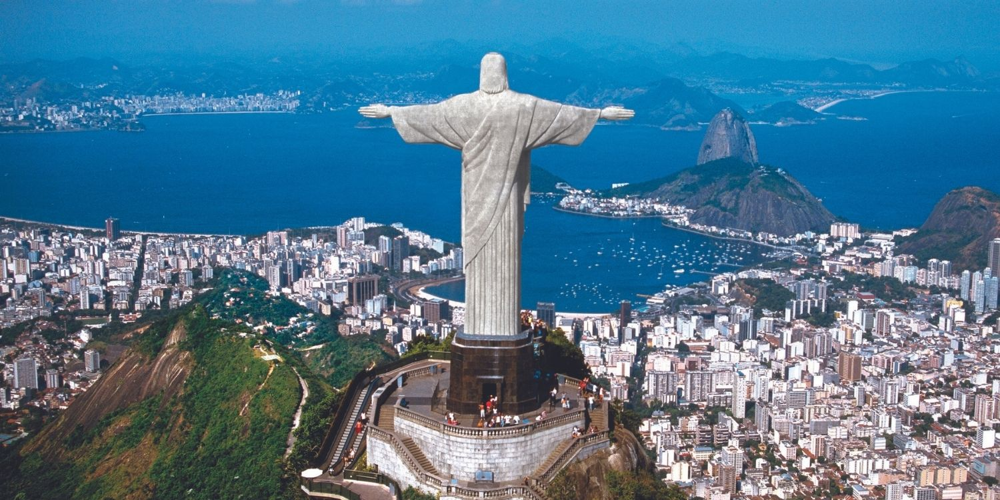
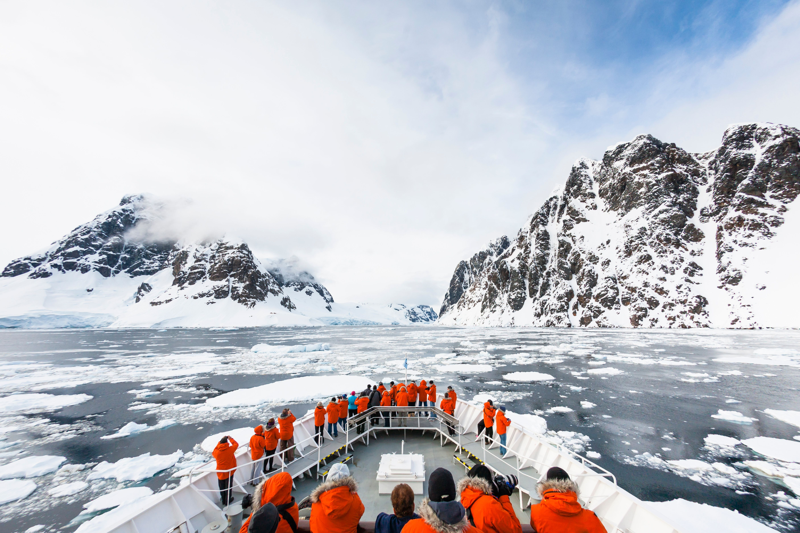

-
Switzerland

-
Brazil

-
America
Antarctica

Switzerland is a mountainous Central European country, home to numerous lakes, villages and the high peaks of the Alps. Its cities contain medieval quarters, with landmarks like capital Bern’s Zytglogge clock tower and Lucerne’s wooden chapel bridge. The country is also known for its ski resorts and hiking trails. Banking and finance are key industries, and Swiss watches and chocolate are world renowned.
The iconic Jesus statue in Brazil is Christ the Redeemer (Cristo Redentor), located on Corcovado Mountain in Rio de Janeiro, famous for its open arms symbolizing peace, standing 98 feet tall on an 8-meter pedestal, and recognized as one of the New Seven Wonders of the World. Completed in 1931, it's the world's largest Art Deco sculpture and a global symbol of Christianity, welcoming millions annually with stunning views of the city.

New York City comprises 5 boroughs sitting where the Hudson River meets the Atlantic Ocean. At its core is Manhattan, a densely populated borough that’s among the world’s major commercial, financial and cultural centers. Its iconic sites include skyscrapers such as the Empire State Building and sprawling Central Park. Broadway theater is staged in neon-lit Times Square
Antarctica, the southernmost continent and site of the South Pole, is a virtually uninhabited, ice-covered landmass. Most cruises to the continent visit the Antarctic Peninsula, which stretches toward South America. It’s known for the Lemaire Channel and Paradise Harbor, striking, iceberg-flanked passageways, and Port Lockroy, a former British research station turned museum. The peninsula’s isolated terrain also shelters rich wildlife, including many penguins.